俞飞鸿自己拍的这部电影，赔的老惨了[泪奔]
事实证明，只有鬼才会等你50年[泣不成声]
腿脚不利索的老人不上坟，所以我爸妈不去；女婿不上坟，所以我老公不去；儿童不上坟，所以我孩子不去，合着就让我一个人去上坟呗？[笑哭]
百行孝为先！为父母上坟！我只说四个字！百无禁忌！
等我脑子有毛病了我也在网上乱说[九转大肠]
其实我不明白为什么男主从来不跟白佳琪说[流泪]他一开始伪装成契合白佳琪的样子，就是会让人以为他可以接受或者喜欢这些的，如果说他不喜欢，为什么从来没有说过呢，真的一定一定要什么都靠女生猜吗。而且白佳琪明白了他不能接受的时候也没有责怪而是试图改变自己。他为什么不能直接说出来呢[流泪]
那个英语老师吗？
是那个一味让学生罚站的英语老师吗[黑脸]
蒲熠星已经有十几首原创歌曲，也以歌手的身份参加了音综和网络春晚，还获得了唱作人奖，唱功也一直在进步，歌曲都是自己作词，很有才华，风格很多样，欢迎大家了解
挺好听的啊[笑哭][笑哭]还有宝宝们不要说他不是专业的歌手为他开脱，我们蒲蒲是正儿八经的歌手哦，接受正常的点评建议，蒲星也一直在学习提升自己的能力，他对这一行是很认真的不要说的好像他只是玩玩否定他的努力
这小伙子真的太优秀了，又帅又聪明又有勇气，永远在扩展自己的舒适区。真的是家长眼中“别人家的孩子”。这半生就喜欢了两个艺人，周润发和蒲熠星[捂脸]对，我是70后。
我不是他的粉丝，但是但是他唱歌真的很好听啊，很喜欢，又没有跑调什么，评论区在恶意啥啊[憨笑][憨笑][憨笑]
福州站也请蒲熠星好吗[憨笑][强壮]
不是粉丝 但是希望不要对他恶意这么大
禅杖砸到脚了[酷拽] 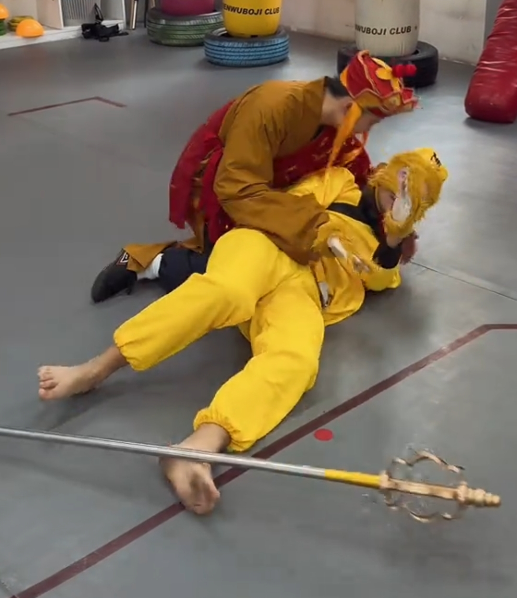
我本无意逐鹿却知苍生苦楚，是非对错我以无心顾问 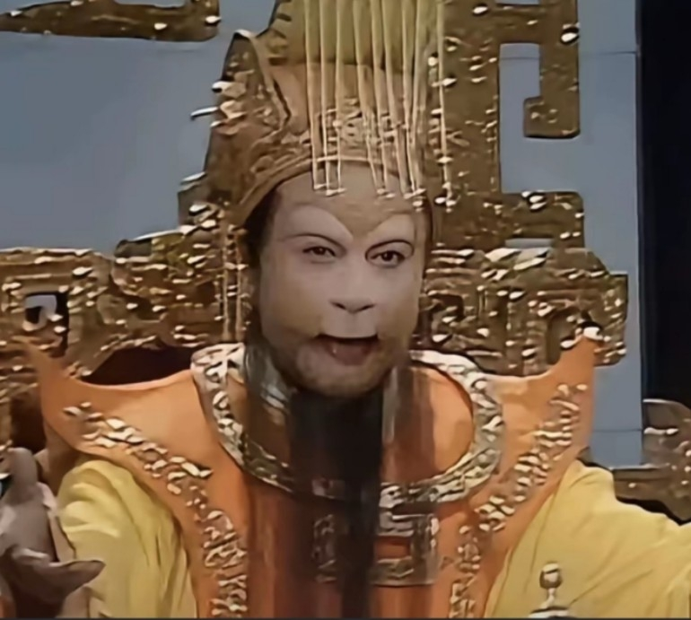
悟空:喷油，他的手掌棉花的来，你滴手杖五指山一样的压[OK][流泪] 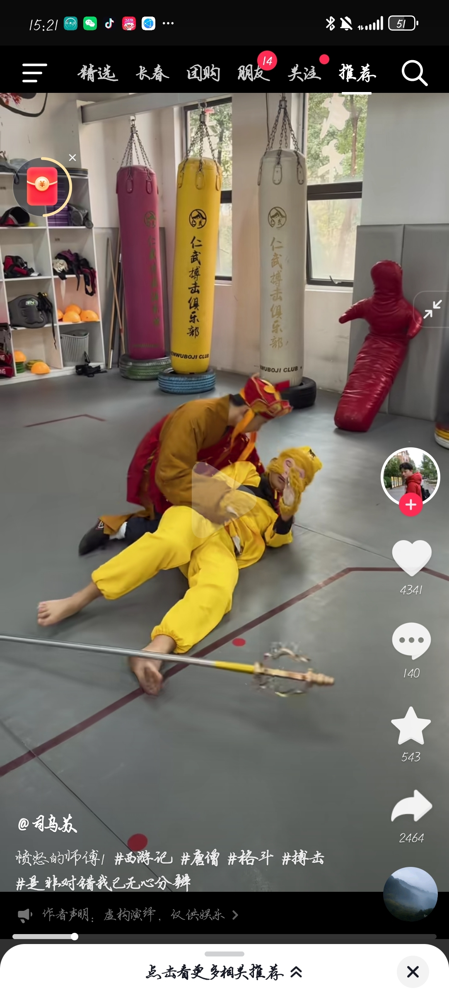
我们插花用的排草，在人家南方路边绿化带到处都是 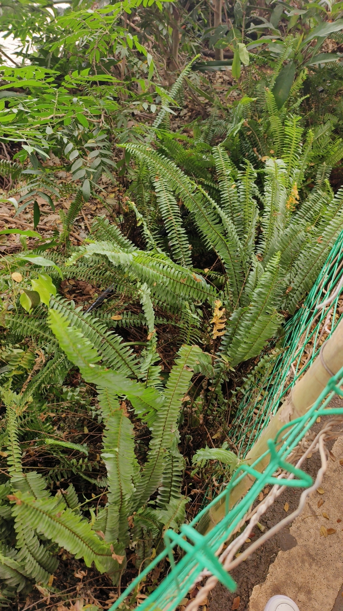
这把王浩法官都给干沉默了[捂脸][捂脸][捂脸]
人生最好的六位导师，母亲的眼泪，父亲的低头，亲戚的冷漠，朋友的离开，爱人的背叛，空荡的口袋！
[微笑]相信我，她不会幸福的
丢屎的时候叫人家屎递夫 被丢中了又叫人家丢那猩 丢绣球了就叫人家山米[撇嘴]
露露：接到绣球要娶我哦[看] 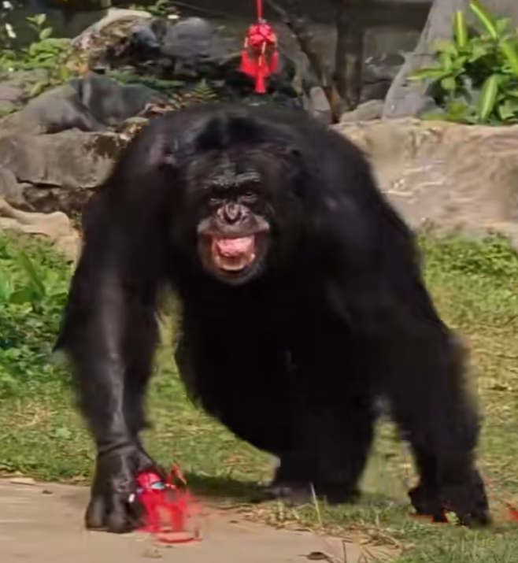
周末的时候特意从深圳坐高铁去的南宁，结果倒好，它在树洞里面睡大觉[捂脸]
老外不知道避谶[捂脸][捂脸][捂脸]
全局最见的是那个杀人犯[微笑]
无意中帮助一只落难的甲虫，将其善良的本质显露无疑[流泪]编剧厉害 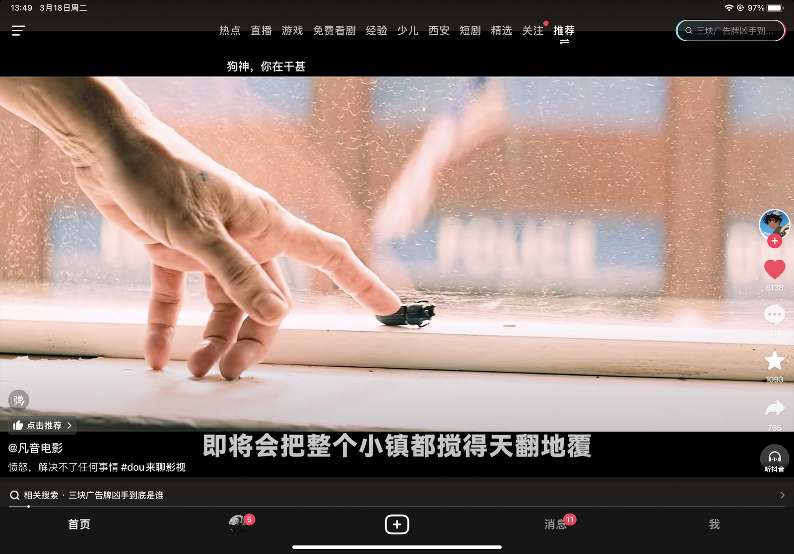
这当年能输给水形物语我是真没绷住
当年三块广告牌没拿奥斯卡真的意难平[流泪]
这片居然输给水形物语，真的莫名其妙
我不行了，这个电影没有一个坏人，但是就是很悲剧
这种概念极强的影片受众体应该很小，可惜了一部本该封神的电影。
广告商就像支持受害者的出头者 他收不到任何好处 也要面对随时可能的报复 这部电影就是全员受害者 火烧掉的是母亲复仇的心 而这股劲是草 越烧越旺 在所有人开始评判受害者时 这部电影就有了凶手
“好人就得让人拿枪指着？”
救命🆘 为什么西方电影这么震撼人心
我妈为了让我弟好好学习，说我得了重病[微笑]
未经他人苦，莫劝他人善，一个母亲刚刚失去孩子表达愤怒是正常的，局长却以癌症裹挟而不是告诉他永远不放弃抓住凶手，局长的死让小镇愤怒，而女孩的死只有母亲愤怒，有人说愤怒解决不了任何问题，可是一个母亲不愤怒她怎么活下去！唯有真相才能走出去！可惜没人给她真相！
这不是都是可怜人的故事吗……[流泪]为什么要怪母亲，最坏的就是强奸犯
哎呀，[捂脸]看了两遍，分不清两个男人谁是池野，谁是男主
是这样吗 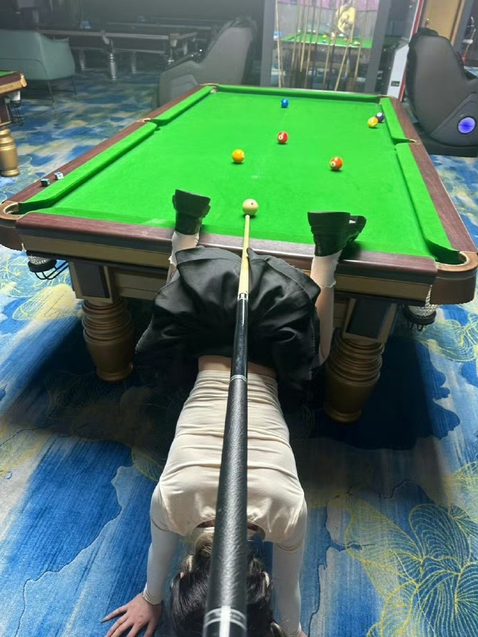
回到宿舍的好兄弟[不失礼貌的微笑]
杆子收起来吧，下一场是自由搏击[听歌]
打饿了 吃口鸡蛋 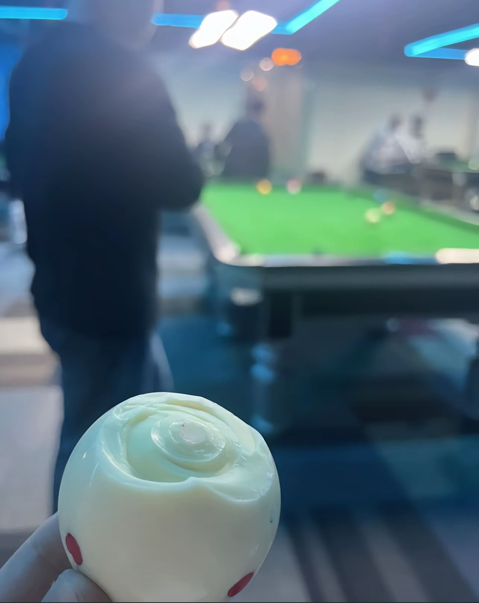
球可以不打了，兄弟，你必须被打
再给他来一句“自由奥”[看][看]
“他说自由搏击也是自由”
视频开始我以为她在是试图挤眼泪，假哭。仔细一看是盲人。我唐突了，对不起。
刀郎间接拯救了多少人[赞]
这才是真的把妹王 起初人们只是以为这是一个普通评论区…[黑脸]
我现在把我妈唯一的嫡长女赐给你
起初我并没有在乎这句话[憨笑] 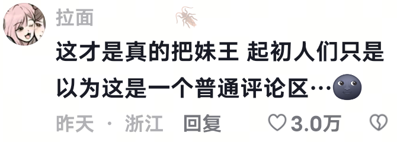
小宝宝们，其实昨晚之前我还没有把妹王这个概念，我的回复也没什么目的，只是单纯的很喜欢很喜欢回复可爱的小女孩们🥹💕。没有其他任何意思，也没想过能火，但主播收到巨量的评论也狠狠幸福了，死手快打啊😭
不得不提[憨笑]@沦陷 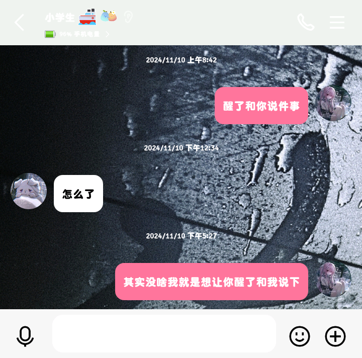
你提亲只需要拎这个 其他的我自会说服我爸妈[憨笑] 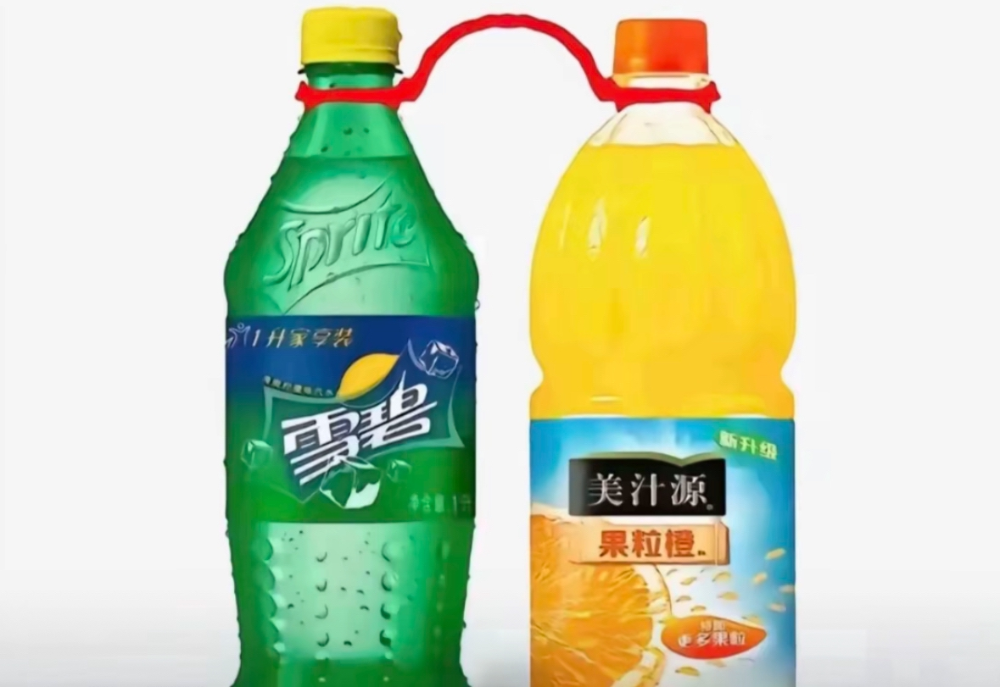
地球离开小猫就是不能转！
小偷日记： 2025年3月25日，我偷偷的潜入了您的家里，想要拿走您的东西，我悄悄的走进卧室，房间的您躺着床上睡觉，眉眼深邃，睫毛好长，窗帘没合好，有调皮的月光跳到您身上，我愣愣的看了半天，然后什么也没有拿，做小偷这么多年，我第一次被人偷了东西。
看到评论区我竟有些许吃醋……
求捏脸码。。。女娲真的不会对我愧疚吗[流泪]
又帅又萌又养猫又会把妹吗。。。我承认我会自己上钩[愉快]
如果煮啵的小猫走失 我将取而代之[强壮]
主包看似单纯 实际上纯把妹王哈[憨笑]
这么会把妹果然是光遇玩家[如花]
看完评论区只恨自己是个绝望的直女
我将在你面前绊倒诡秘。
我将在你面前故意跟朋友打闹 然后疯狂摩擦我的缤纷水果鞋 在你面前不经意间假装投篮[黑脸][强壮]
本以为主播长这么权威性格会很高冷 谁懂打开评论区看到阳光善良温柔的主播的反差感 一眼爱上了[黑脸]此乃萌物。
宝宝我争不过她们[流泪]
哈哈，当时只是在和主人玩，不小心被拍下来了
我就在跟前，我婆婆跟娃说，你没有妈妈，好几次，后来我说她，她说跟娃开玩笑[捂脸]
我妈说不要嫁穷的，不仅穷事还多，是真的吗？给点经验！
谁能告诉我这是不是真的，真的有奶奶教这么孩子吗？
一讲东北话！面相都变了[思考] 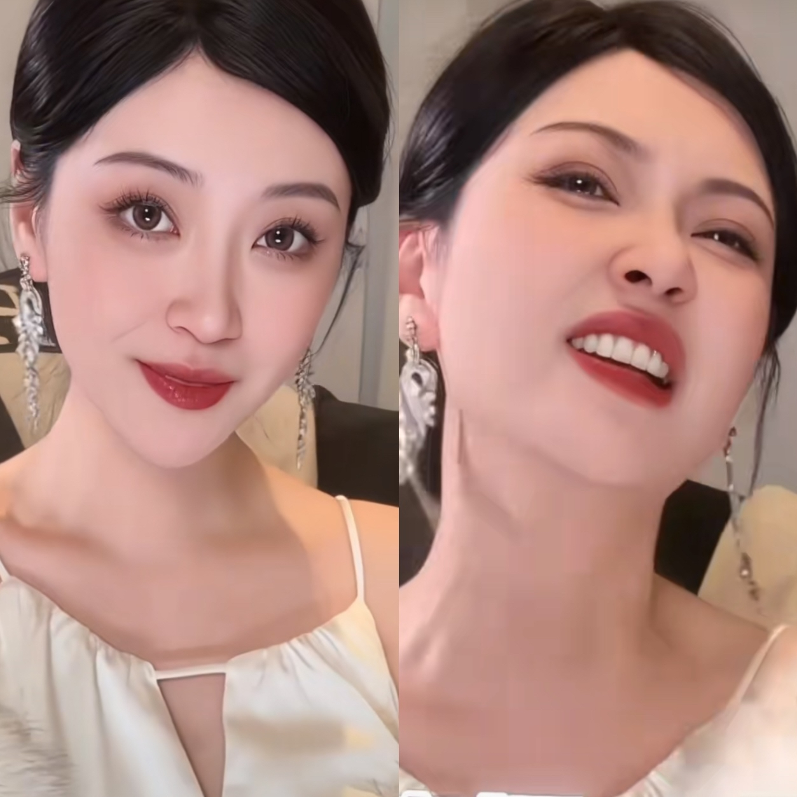
Read more: